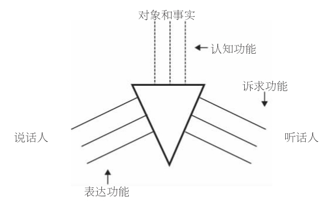
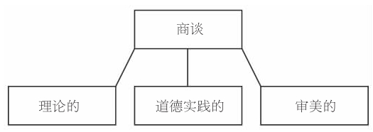

哈贝马斯声称自己已经开创了社会哲学研究的新方法，这种方法始于对语言运用的分析，并能确定在言语中协调行为的理性基础。他把这种新方法同哲学中一个更大的转变，即“语言学转向”联系了起来。20世纪的许多哲学家试图通过对言语运用中固有的概念性事实的分析，来解决表面上看来很棘手的认识论和形而上学的争端，语言学转向这个短语最初就是指这些哲学家所作的不同努力。基本的理论方法就是，把关于何物存在、何物可知以及如何认知的问题视做语义、指代或意义如何产生的问题。哈贝马斯把类似的方法用于对社会的本质和社会秩序可能性的探究。
哈贝马斯的语言学转向不仅是朝向语言的一次转变，还是从他所称的“意识哲学范式”的一次转身。这两个转向是相辅相成的。意识哲学指的是一种极为广泛的哲学范式，可被总结为几个典型观点：
1.笛卡尔的主体观： 这是一个为人熟知的观念，认为存在着某种被称为主体（或自我）的东西，它是心智的中心，被想象成由观念和感知构成的内在精神领域。
2.另一个常一起出现的观点是形而上学二元论 ，认为存在两种不同的本质：思维和思维的派生物。这有时也被称为笛卡 尔的二元论或心物二元论， 因为笛卡尔认为心灵和肉体是两种根本不同的存在。
3.主体-客体形而上学： 这是一种更一般性的观点，认为世界由作为整体的客体和众多的思维并行动着的主体组成，客体居于主体之上并与之相对。不把主体视为对象世界的一部分，这是该观点的显著特征。（并非所有的具有此特征的理论都是形而上学二元论。例如，黑格尔从内部改造了主体-客体范式，把世界看做具有自我意识的单一主体性精神的产物。所以黑格尔是一元论的主体-客体形而上学。）
4.基础主义： 从狭义来说，基础主义指的是维也纳学派或“逻辑”实证主义的认识论教条，即知识的基础是感觉材料，或是一组原始的观测性句子。从广义来看，基础主义指自笛卡尔肇始的以寻求确定性为认识论目标的大部分现代哲学。
5.第一哲学： 这种观点认为哲学要先悬置自然科学所确认的真理，而去为自然科学研究模式的有效性提供证明。在广义的基础主义哲学家那里，这种观点是很常见的，比如笛卡尔和康德两人都认为哲学的主要任务就是为正确的知识确立标准。
除此以外还有哈贝马斯认为与意识哲学有关的两个观点，这两个观点更直接地对社会理论产生了影响。
6.社会原子主义： 社会哲学、政治哲学中的常见观念，认为单个主体在逻辑上、本体论上、解释方面要优先于社会的、政治的或伦理的现实。根据这种观点，共同体是离散的、纯建构的、前社会的、前理论的主体之间关系的总和。社会原子主义的中心论点是，单个的主体不是由单个主体之间的联系或者单个主体与整个社会之间的联系建构而成的，但是，社会或共同体是由单个主体间的联系建构而成的。这产生了一个结果：共同体不再被视为具有任何内在的价值，共同体的成员资格不再被认为本质上是有价值的。相反，共同体的存在是为了服务于单个主体先于共同体而存在的利益和愿望，共同体的成员资格只具有工具性价值。
7.作为宏观主体的社会： 这种观点认为社会是一个宏观主体，在柏拉图、卢梭、席勒、黑格尔、马克思和涂尔干的作品中都有关于宏观主体的论述。该观点认为社会是一个统一的有机整体，不是单个人的集合或聚合，而是一种集体人格。
哈贝马斯并没有说，处于这种范式的所有哲学家都会接受意识哲学的全部代表性理念。实际上他们不能，因为这些理念之间并不一致。比如，第6和第7个理念之间明显不一致。历史证明，这些观点都发挥了重要的影响力，都深植于现代哲学，而哈贝马斯全部抛弃了它们——认识到这一点就可以了。
从语言学转向的分析开始，我们可以勾勒出哈贝马斯哲学的粗线条。首先，哈贝马斯的社会理论并没有把社会视做与众多主体相对立、偶尔发生互动的客体（或客体的集合）。社会世界不是一个对象，或者对象的集合，也不是严格意义上独立于我们的事物。相反，社会是我们栖息于其中的一种介质。我们“在社会中”，社会也“在我们中”，在我们思考、感觉、行动时。哈贝马斯从青年时期对海德格尔的研究中学到了这样的观点。第二个重要方面是，哈贝马斯并不将哲学视做学科中的学科，优先于自然科学的学科。哲学的任务是要从自然科学和社会科学中汲取素材，在学科间展开合作性研究。必要时，哲学要充当哈贝马斯所谓的“有坚决的普遍主义主张的经验理论”的替身，也就是说，哲学通过为经验性证明提供假说来填补自然科学中的空白（《道德意识与交往行为》，第15页）。最后一点是，哈贝马斯的社会理论把社会现实的主体间性这一维度放在了首位。社会不再是离散的单个主体的聚合，也不再是一个有机整体，每个部分都要服从于整体的目的。社会不是一个“宏观客体”，甚至也不是统一的。在第五章我们会看到，社会是一个复杂而成分多样的主体间的结构，有明显重叠的领域，身处其中的个别行为人之间存在着互动。
正面看来，哈贝马斯的语言学 转向还是一个语用学 转向。哈贝马斯试图通过一种特殊的意义理论——语用意义理论的帮助来改造社会理论。20世纪90年代，哈贝马斯在他法兰克福大学的同事卡尔-奥托·阿佩尔的影响下，认为语言的意义并没有被命题意义所穷尽，意义具有“施事-命题的双重结构”，或者说命题意义和语用学意义是不可分割的。为了理解这个观点及它对哈贝马斯理论的影响，让我们对其展开独立的考察。
命题意义
根据当前标准的意义理论，句子的意义取决于它的真值条件。要理解句子的意义，只要弄清楚是什么决定了这个句子的真伪。意义的真值条件理论已被证明是持久和有用的。一方面，它可以解释一个关于语言的不寻常事实，即为什么从有限的有意义的词汇和用于组合的语法规则中可以生成无限的、复杂的有意义的句子。接着，这又解释了为什么我们可以理解从未听过的句子的意思。
但是，意义理论的真值条件模型也遇到了一个难题，即看起来它只对语言的一小部分——命题和描述具有合理性。它能很好地分析“雪是白的”这样的断言，但是，对于“你好吗”这句话就不大奏效了。要理解“你好吗”这个表达，必须知道这句话为真（或伪）的条件——这看来是一个荒谬的主张。有时语言本身的意义毫无问题，但是要说句子的意思或句子的部分意思依赖于它们的真值条件，听起来却很怪异，很多例子可以表明这一点。所以哈贝马斯认为真值条件语义学犯有“描述性谬误”。真值语义学把只适用于语言的某些方面的意义理论，即事实上的确具有描述或代表功能的命题，进行扩大而适用于语言的全部，这就犯了错误。这是哈贝马斯倾向于语用意义理论的原因之一。
语用意义
因为着眼于语言能做 什么，而非语言说 了什么，哈贝马斯的意义理论是语用学的意义理论，是关于语言使用 的理论。他是从德国语言学理论家卡尔·比勒（1879—1963）对语言的定义入手的，这位理论家把语言定义为“人们交流关于这个世界的知识的工具”。比勒赋予语言三种功能，这三种功能分别对应着第一、第二、第三人称视角。这三种功能是：代表事态的“认知”功能；向听话人提出要求的“诉求”功能；描述说话人经历的“表达”功能。比勒用一张表格把语言的三种功能表示得清清楚楚。

图9 卡尔·比勒的语言功能模型
比勒主张语言应用的任何例子都要涉及说话人、听话人和世界这样一个三角关系，语言理论必须顾及任何一方。哈贝马斯同意他的说法，认为真值条件意义理论错误地只重视语言的认知功能，忽略了其他两个功能，没有考虑到说话人和听话人的关系。所以，真值条件意义理论无法充分解释为什么我们使用语言时，会用如此之多的不同方式来相互交流、协调行为。
哈贝马斯的观点是这样提出的：他认为言语的语用功能使对话者走向共同的理解并达成主体间的共识；相对于语言的认识世界的功能，语用功能具有优先性。真值条件意义理论把命题作为语言中基本的意义单位，而语用学意义理论则把说话当做语言中基本的意义单位。一句话由单词构成，在特定的情况下出于某个特定的目的，说话人对听话人说了一些单词，比如“窗户开着”。命题是单词所代表的内容或思想，在这句话里，命题就是窗户是开着的 。在实际生活中，命题总是嵌在话中。不能说是哈贝马斯抛弃了真值条件意义理论，首先他只是否认它是意义的一种全面描述，其次他否认真值条件意义是基本的意义。相反，他认为通过分析言语的语用功能能更好地揭示意义和理解。
（《论交往的语用学》，第228页）
共识与协定
哈贝马斯认为言语的基本功能就是协调众多独立的行为人的行为，并为交往互动有秩序、不起冲突地展开提供可遵循的看不见的途径。语言之所以能够实现这样的功能，是因为语言的内在目标（或终极目的）就是要达成理解并产生共识。哈贝马斯认为这是一个事实，即“达成理解作为人类言语的终极目的内在于人类的言语中”（《交往行为理论》上册，第287页）。他用德语单词Verständigung来表示达成理解和协定的过程，又用德语短语rationales Einverständnis来表示这个过程的结果，即所达成的合理的理解或共识。上述两词都源自动词sich verstä-ndigen，意指使自己被别人理解，但也指与别人达成协定。这是一种重要的模糊性，对解释社会秩序起到了关键作用。接下来，出于方便的考虑我将使用“共识”这个不甚准确的词，但请不要忽略上述模糊性。
哈贝马斯的理论声称，言语的语用意义表现在，言语具有建立说话人主体间共识的功能，共识又形成了他们接下来的行为的基础。哈贝马斯认为，言语能够完成这个功能，是因为说出的话的意义取决于说话背后的理由。我称此为理性主义观点，因为认为意义取决于动机是理性主义的一种表现。哈贝马斯称这个观点为“意义的有效性基础”，这样说也许更准确，但是也会造成误导，因为哈贝马斯是在特殊的意义层次上使用“有效性”这个术语。他是在语用学而非形式逻辑的意义上使用这个词。在命题逻辑中，“有效性”这个词指形式完整的句子之间的保真推论关系；而哈贝马斯用有效性（Geltung和Gültigkeit）这个词来指代的却与之大相径庭，在他那里，有效性指动机和共识之间的密切关系，用他的话来说，就是“与理由之间的内在联系”（《交往行为理论》上册，第9、301页）。
我所称的哈贝马斯的理性主义观点，其关键之处在于：言语的语用意义取决于其有效性，而说话人为达成共识而提出的理由则是有效性的基础。哈贝马斯还坚持认为，行为、言语、命题本质上是公共的、共享的；这是因为意义取决于理由，而理由本质上是公共的、共享的。共享的意义取决于共享的理由。（就此我们可以看出，哈贝马斯的语用学意义理论如何以截然不同的术语重构了公共领域主题，并且比起他的早期著作，更具有理论抽象性。）
现在，让我们来细察一下这个理论的具体内容。哈贝马斯认为，任何真诚的言语行为都提出了三个不同的有效性声称：真实性的有效性声称、正当性的有效性声称、真诚性的有效性声称。这些都是我们在前面一章结尾时接触到的承诺概念。有效性声称是必要的 ，因为它们总是可以理解成在言语行为中已经被提出来了：如果不预设我们说的话是出于真诚，是真实的、正当的，并且把这个信息传递给别人，我们就无法让别人理解我们，也无法说出任何有意义的话来。作为一个正当性有待证明的承诺，有效性声称承诺了提供合适理由。哈贝马斯称，在所有交往行为中，说话人必须提出全部三个有效性声称。根据言语行为的不同，比如是断言、是请求、还是声明，只有一种有效性声称能被听话人当做主题并接受。
当说话人提出一个关于真实性的有效性声称时，比如“雪是白的”，她其实暗示着有充分的理由使人相信这一点；如果有必要，她可以用这些理由来使听话人相信这句话的真实性。听话人在这些理由的基础上将会理解这个断言。情况实际上没有看起来那么简洁明了。问题是，当我对“雪是白的”这句话提出真实性的有效性声称时，我是在声称这句断言的内容，即“雪是白的”这一点是真实的呢，还是在说“雪是白的”这句话本身是真实的？一开始，哈贝马斯没有就这一点作详细说明：他声称说话人“可以理性地促使听话人接受他言语行为表达的意图”，因为……他可以担保 提供……具有说服力的理由，这理由能够经得起听话人对言语有效性声称的质疑（《交往行为理论》上册，第302页）。现在，他主张真实性是同时针对言语的内容和言语本身提出来的。
对正当性的有效性声称，如果有什么区别的话，那就是更复杂些。哈贝马斯称，当我对言语的正当性提出有效性声称时，我同时对潜在的社会规范提出了正当性声称。例如，当我说“偷窃是错误的”，我就含蓄地表明了我能够给出理由，让听我说话的人相信偷窃是错误的。这里有两重复杂性。首先，哈贝马斯认为道德陈述，如“偷窃是错误的”并非真正的命题，并不具有真值。“偷窃是错误的”是“不要偷窃”的晦涩表达，说“不要偷窃”是真的或假的，没有任何意义，因为我们不会断言祈使句的真伪性。所以，尽管“谋杀是错误的”这一道德言论的内容看起来类似命题“谋杀是错误的 ”，实际上只是拐弯抹角地想说，“不要杀人”这个祈使句所传达的潜在规范的正当性已经得到了证明。由此可以得出结论，关于正当性的有效性声称必须是对潜在道德规范的有效性的声称，是提供理由来证明规范之正当性的承诺。
“正当性”是一个含混的概念，这是第二重复杂之处；它可以表示合适的、合理的、道德上允许的或者道德上必须的。提出一个正当性的有效性声称，可能就等同于声称在现有情况下这个规范是合适的，或者是合理的；这个规范规定的行为是允许的，或者是必须的。哈贝马斯的观点似乎是：对正当性提出一个有效性声称，就是声称这个重要的潜在规范是合理的，是建立在同道德领域有密切关系的特殊理由之上的。当规范被正确运用于特定场合时，对于所有相关人来讲，行为是允许的、被禁止的还是被要求的，就一目了然了。
关于正当性的有效性声称，这里谈的已经够多了。在第七章我还会再回到这个话题上来。哈贝马斯的理性主义观点认为意义取决于有效性，因为要理解言语的意义，听话人必须能够思考（并且决定是接受还是否决）与有效性的证明有关的理由。这里起到实际作用的是理由和有效性，而非真实性，这是关键的地方。哈贝马斯并没有说要理解一个命题的意义，我们必须知道使这个命题或真或伪的条件；他宣称的是，要理解言语（也包括行为）的意义，人们必须能思考并且接受或否定可被恰当地援引来证明其正当性的理由。用他自己的话来说，“当我们知道什么使言语行为可接受时，我们就理解了言语行为的意义”（《交往行为理论》上册，第297页）。
理解与意义
到目前为止，我一直都把哈贝马斯自称为形式语用学的理论描述为意义理论。读者也可能注意到了，我们一直都把意义的问题同理解的问题放在一起讨论。这并不奇怪，因为哈贝马斯社会理论新方法的提出，有部分原因就是为了解决意义的理解问题。哈贝马斯认为意义理论应该也是理解的理论，否则就把意义问题从说话人给予听话人素材、供其理解的背景中抽象出来了。换言之，他认为意义是关乎主体间的，而非一种客观事物。（请注意他的意义理论如何表明了他对意识哲学的舍弃。在哈贝马斯看来，意义不是由说话人同外部世界的联系决定的，而取决于说话人同对话者的关系；意义本质上是主体间的，不是客观的，不是词语与事物之间的两极关系。）
在哈贝马斯看来，言语意义的理解有四个不同的层面：
假设，阳光明媚的冬天，某一日在约克，我和我的邻居说“悉尼正在下雨”。尽管邻居知道这句话的字面意思，即真值条件，他还是不能算听懂了，因为仅仅根据这句话的字面意思，他仍然无法明白我说这句话有什么用意。假设这位邻居曾经告诉过我他准备移民澳大利亚，那么现在他对我的意图就会有所领悟了。也许我正在给他一个友好的提醒：地球另外一边的草并不总是更绿一些。但是，如果他认为我的天气预报没有什么依据，他也许会怀疑，也许会不相信我说的话。再假设，现在他知道我刚刚同在澳大利亚的兄弟打过电话，那么他就会考虑我的话的理由，从而对我的话达到完全的理解。为了理解，他必须考虑、接受我的话背后的理由，或者说认识到我的话关于真实性的有效性声称。
异议
比起其他的理论研究，哈贝马斯的意义理论招致了更多的批评。我们已经提出过一些棘手的问题：真实性的有效性声称是针对断言本身，还是针对断言的内容？抑或针对两者？正当性的有效性声称是针对言语、行动，还是针对潜在的规范？这里的正当性概念取的是哪一层意思？在此我无法详尽讨论所有对这些批评的迂回回应，然而，如果不对两种主要的反对意见加以说明，直接从语用学意义理论过渡到哈贝马斯理论的其他方面是不妥的。
第一种反对意见集中于哈贝马斯的两个术语，即Verstä-ndigung和Einverständnis的歧义性上。主张社会秩序由共享的理解和意义决定，这与声称社会秩序取决于主体间的协定有明显相异之处。共享的理解和意义可能还远远不能促成协定的达成。很多社会理论家，比如契约论者，声称社会秩序取决于协定，并且遵守这些协定是有理由的。但是声称社会秩序只取决于共享的意义和理解又完全是另一码事了，如果这一主张成立，就更让人意外了。哈贝马斯的一个观点，即社会成员仅仅由于互相之间的理解就会遵守同样的社会规则和道德约束，常被指责为不合逻辑。
第二种反对意见针对的是那个有争议的观点，即存在着面对真实性、正当性和真诚性的三种不同的有效性声称。哈贝马斯否认只存在一种意义，即真值条件意义，也否定了不具有真值条件的句子，如“你好吗？”或“不要偷窃！”从技术上讲是无意义的。但是他提出的替代性主张，即存在着由三种类型的有效性声称所代表的三种意义，看起来甚至更无法说服人。以一个复合句为例：“她打了我一记耳光，这违反了会议规则。”这句话的前半句似乎作了一个真实性的有效性声称，而后半句似乎作了一个正当性的有效性声称。我们如何理解这整句话的意思呢？自然语言天衣无缝地把规范、认知、表述糅为一体，比如“这个学生剽窃了我的书！”这句话可以同时陈述一个事实、表达对践踏规范的行为的反对并且表露主观情感。哈贝马斯关于理解的理论似乎只是把这些不同方面拆散，再归入不同的有效性层面。
这些批评都可谓有的放矢，但是不要忘了，哈贝马斯对于语言、意义、真实的探究都被看做他的社会理论的前奏。比起社会理论对于意义和理解的理论的作用，他对意义和理解的理论对于社会理论的作用抱有更浓厚的兴趣，所以，他倾向于在语言哲学中选择有利的论据为己所用。我们不该因为哈贝马斯的意义理论中存在错误或误解，就抑制不住冲动去否定他的全部哲学。相反，我们应该重视哈贝马斯通过语用学意义理论为社会、道德、政治理论提供的洞见。
交往行为和商谈的概念为哈贝马斯的语用学意义理论和社会、道德理论提供了链接的主要一环。目前的一般看法仍是，言语行为的意义取决于其有效性声称。有效性声称起到了一种保证或担保的作用，担保说话人可以举出支持性理由来说服听话人接受所说的话。很多时候，听话人默认这样的担保，这样的担保足以协调交流双方的互动。当某人理解了一个简单的口头请求并愿意答应时，说话人和听话人之间就通过达成共识，从交流直接过渡到行为，而这行为又是由有效性声称在暗中调节的。
那么，当交流失败、听话人拒绝了有效性声称时又是什么样的情形呢？当听话人要求说话人列出理由来支持其有效性声称时，行为人就在分歧的驱动下从行为进入了商谈。商谈是关于交流的交流，是在行为的情境下对未达成的共识的一种反思性交流。假设你要求我，当你在场的时候，不要在我自己的办公室里抽烟，我对你的请求表示抗议，因为我知道你也是个烟枪。我问你有什么理由这么要求我，你也许会回答说你最近戒烟了，不希望再受到诱惑回到老路上。听到这番话，我也许会接受你的理由，把香烟收起来。这样，按照哈贝马斯的观点，我们就进入了商谈（虽然持续时间很短），达成了理性推动的共识（rationally motivated consensus）（这个短语是对rationales Einverständnis公认的对等英语翻译），并自然地回到了行为的背景下。
关于商谈，必须指出四个重要方面。首先，商谈不是语言或言语的同义词，而是用来表示以理性共识为目的的反思性言语的一个术语（《交往行为理论》上册，第42页）。商谈原则上总是以理性共识为目标，即使在实际上无法达成共识的情况下也是如此。其次，“商谈”这个词并非特指哲学家和学究们所进行的罕见而特殊的语言活动，它指的是融入日常生活的普通推理和论证。然而，商谈并非只是语言游戏中的普通一种；根据哈贝马斯的观点，商谈在社会世界中占有一个特别重要的地位。他认为，商谈是调节现代社会日常冲突的缺省机制。这个假设是根据观察得来的经验。商谈的功能就在于更新或修复未达成的共识，并重新建立社会秩序的理性基础。这是基于商谈实践分析所提出的重构性主张。
第三，商谈概念和有效性声称概念密切相关。商谈始自听话人要求说话人支持其有效性声称的挑战。三种有效性声称（关于真实性、正当性和真诚性）分别对应三种商谈：理论的商谈、道德的商谈以及审美的商谈。

图10 三种商谈
例如，你要求我戒烟的请求引发了旨在支持关于正当性的有效性声称的商谈，这种商谈，根据哈贝马斯的理论，就是一种道德实践的商谈。任何由要求支持关于真实性的有效性声称引发的商谈就是理论的商谈。（此处必须注意，“理论的”这个术语在此适用的语境要比“规范的”更广。）
最后一点，商谈是高度复杂、具有严格约束条件的实践，不存在想说就说的自由。这是因为，论证包括了某些明确的、定形的规则。哈贝马斯把这些规则称做商谈的“理想化语用学预设”，或简称为“商谈规则”。
哈贝马斯提出了三个层次的规则。第一层是基本的逻辑和语义规则，比如无矛盾原则和连贯性要求（《道德意识与交往行为》，第86页）。第二层是主宰过程的规范，比如真诚性原则，即每一个参与者必须心口如一；以及责任原则，即参与者同意应要求证明其断言，或不作论证但陈述理由。第三层是使商谈过程免于胁迫、阻挠和不公正的规范，这些规范能确保唯有“更优论证在无施压的情况下”能够胜出。这些规范包括以下规则：
（《道德意识与交往行为》，第89页）
哈贝马斯称商谈的规则为“语用学预设”，因为这些规则是商谈实践 中潜在的预设。商谈的规则不怎么像拼字游戏或象棋的规则，后者有文字的表述；它更类似于语言的句法规则。我们可以顺利地遵循商谈规则而无须知道这些规则的内容或意识到自己在遵守这些规则。哈贝马斯坚持认为这些商谈的语用学预设是必要的 ，因为商谈的参与者没有人能够在陈述理由或者接受理由的时候不作这样的预设。要进入商谈就必须允诺真诚、论证自己说的话，就不能自相矛盾、排斥其他参与者，等等。反过来说，这些规则也是必要的。对于现代社会的行为人来说，交往和商谈是解决冲突的必然路径，这些规则已经深植于社会和每个人的品质中了。
最后，商谈的规则具有理想化 的特征，因为这些规则引导商谈参与者以理性共识的理想为目标。有一种商谈，在其中所有意见都得到倾听，没有论证被武断排除在考虑之外，只有更优论证的力量能获胜，这样的商谈假如成功的话，就能基于所有人都接受的理由而产生共识。在现实生活中，由于时间有限并且参与者易于犯错，商谈只能是或多或少地接近理想。但是，这样的商谈仍然能够具有调节的作用，能够确保包容性、广泛性，防止欺骗和胁迫行为。这些理想是调节性的，但同时又是真实的，只要包含这些理想的论证实践是真实的。
如何识别商谈的规则，这是一个难以回答的问题。哈贝马斯认为，可以通过言语表述是否自相矛盾的判断方法，来表明商谈的所有规则都是真正必须的预设。“天要下雨了，但是我不相信”和“雪是白的，但雪并不真是白的”这样的句子都是自相矛盾的，因为说话人含蓄表达的真实性声称同句子的内容明显抵触。哈贝马斯声称，这是由于此类句子的语用意义同命题意义相矛盾。类似地，他认为，像“通过将一些人排除在商谈之外，我们取得了理性共识”这样的句子也包含了表述与行为的自相矛盾。这样，判断表述与行为是否存在自相矛盾的方法可以用来证明第一条商谈的规则；以此类推，全部的商谈规则都可以用这一机制来证明。判断一条规则是否是真正的商谈规则，只要看明显地违反这条规则是否会导致表述与行为的自相矛盾。
对共识、理性主义、商谈等命题加以综合观照，哈贝马斯的语用学有效性概念就有了明晰的重点。可以用有效性-共识的条件句来最简洁地阐明这一点：
我试图用这个公式以更为形式化的方式，来表示有效性这个哈贝马斯哲学中的基本概念的结构。必须提醒的是，在哈贝马斯的作品中我们无法找到这个或者接下来的两个公式。它们只是非常简明的抽象，我希望它们能有助于把握哈贝马斯对有效性、真实性、正当性相当冗长、散漫的表述，并使三个概念之间的关系澄明起来。
说一句有意义的话或者同他人进行交流本质上就是提出有效性声称，提出理由来说服根据上述规则参与商谈的人。与其说是真实性，毋宁说是有效性构成了意义理论的基本概念——这只是哈贝马斯的一个观点；他还强调，真实性本身就可以被理解成有效性这个基本类属概念下的一个实例。他这么说是想表明，真实性概念同理由有同样的关系，具有同样的引出共识的语用功能。
进而，哈贝马斯认为正当性也可以被理解为这个基本概念的一个实例。正当性概念因此可以用下面这个略有变动的公式来表示：
当我发表道德意见时，我默认了行为背后的规范。正如我在断言p这一行为中承诺了p的真实性，所以当我说“偷窃是错误的”时，就承认了这句话背后的规范：不要偷窃 。基本的一点就是有效性的不同方面：一面是断言，另一面是道德行为和言语行为，与命题和言语表现有同样的结构和语用功能。
哈贝马斯的结论是，真实性和正当性这两个概念具有类似的结构功能，上面的几个公式表明了它们之间的相似之处：都是条件命题，左边是有效性、真实性、正当性，右边是理性共识。所有被称为有效、正当或真实的，都必然会在符合规则的商谈中从参与者那里获得认同。这里“必然”两字只适用于特定的语用意义，即说话人、听话人和通常意义上的行为人都不可避免地要在有效性声称和共识之间寻找联系。“假如……那么”句式中的关联词表示的是语用学的意义，而非逻辑联系。
最后，哈贝马斯为我们提供了针对这种类似关系的解释。真实性和正当性之所以具有类似的结构与功能，是因为两者都是正确性这唯一的基本范式的具体表述：真实性和正当性是有效性这个属下面的类。
在后面的章节里，我将对正当性以及正当性与真实性的关系作更多的探讨，对商谈的概念的论述还要更多。现在我们必须适时转而讨论哈贝马斯的社会理论专题了。